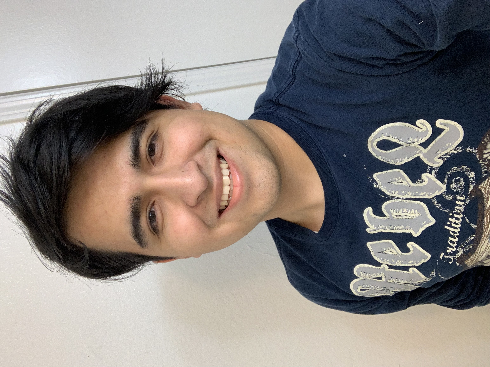

About Me
Hello everybody, I am Luis Gamino
Technology isn’t just my field of study—it’s my passion. From coding and software development to troubleshooting hardware issues, I thrive on solving complex problems and discovering new possibilities.
I am currently pursuing a degree in Programming and Software Development at Navarro College, and I have earned certifications in Web Development (Frontend), Cybersecurity, and IT. My experience goes beyond coursework— I actively assist colleagues with hardware and software troubleshooting, fixing program errors, resolving technical questions, and repairing devices like printers, monitors, and peripherals. These hands-on experiences have strengthened my problem-solving skills and deepened my enthusiasm for IT.
I enjoy experimenting with emerging technologies, both in hardware and software, to understand how things work and push the boundaries of innovation. Whether it's fixing a printer, optimizing code, or developing a web application, I see every challenge as an opportunity to grow.
Technologies & Skills
- Languages & Frameworks: JavaScript, C, SASS, HTML, CSS, Bootstrap
- Tools & Platforms: Git, Linux, Docker
- Current Learning Goals: 3D Design (Blender), Backend Development, React.js, Python
I am always eager to learn and collaborate on innovative projects. If you’re looking for a developer with a passion for technology and problem-solving, let’s connect!
📂 Explore my work: GitHub Portfolio
Certificates
- Web Development
- CiberSecurity
- IT Support
Education
